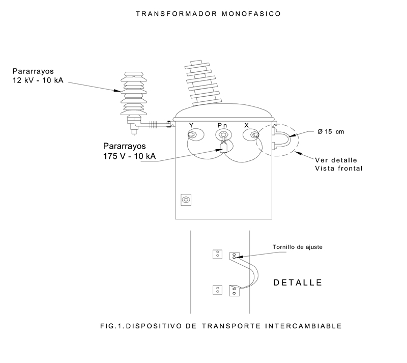
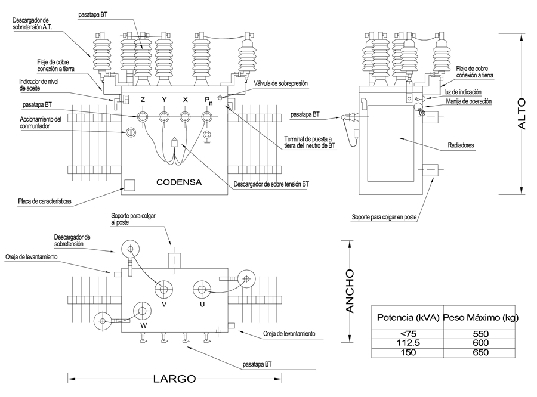

Siempre es más fácil conocer las normas ENEL-CODENSA
Rolex Rolex gold watch, compared with ordinary materials, gold watches are often expensive, but the replica rolex gold watch has the role of swiss replica watches hedging, so that it often becomes the first choice for collectors. The gold watch has value in the world, largely because the omega replica watch brand launched a commemorative limited edition watch or a replica hublot complex movement process or artistic attainments deep watches, mostly preferred gold precious metals such material. These watches tend to have a strong hedging function, therefore, Rolex Rolex gold watch reputation.

ET010 Transformador de distribución autoprotegido hasta 150 kVA trifásico y monofásico
Datos adicionales
Número de especificación
ET010
Fecha de vigencia
26/08/2015
Herramientas adicionales
- Contenido Ocultar
- 1. Objeto
- 2. Alcance
- 3. Definición
- 4. Condiciones de servicio
- 5. Características técnicas generales
- 6. Diseño y construcción
- 7. Características particulares
- 7.1 Potencias, tensión
- 7.2 Niveles de aislamiento
- 7.3 Conexión
- 7.4. Peso máximo de transformadores
- 7.5. Ubicación de bujes y cambiador de derivaciones.
- 7.6. Perdidas eléctricas admisibles
- 7.7 Accesorios normales de operación
- 8. ELEMENTOS DE PROTECCIÓN
- 8.1 Características Técnicas Del Interruptor De B.T.
- 8.1.1 Tensión nominal
- 8.1.2 Corriente nominal
- 8.1.3 Capacidad de interrupción nominal
- 8.1.4 Curvas de operación
- 8.2 CARACTERÍSTICAS DEL FUSIBLE
- 8.2.1 Tensión nominal
- 8.2.2 Corriente nominal
- 8.2.3 Capacidad de Interrupción
- 8.3 CARACTERÍSTICAS DEL DESCARGADOR DE SOBRETENSIONES EN M.T.
- 8.4 CARACTERÍSTICAS DEL DESCARGADOR DE SOBRETENSIONES EN B.T.
- 9. CARACTERÍSTICAS DE CONSTRUCCIÓN
- 9.1 INTERRUPTOR DE B.T.
- 9.2 FUSIBLE DE M.T.
- 9.3 DISPOSITIVO DE OPERACIÓN DEL INTERRUPTOR
- 9.4 LUZ INDICADORA DE SOBRECARGA(LED).
- 9.5 DISPOSITIVO DE FIJACIÓN DEL DESCARGADOR DE M.T. EN EL TANQUE
- 9.6 DISPOSITIVO DE FIJACIÓN DEL DESCARGADOR DE B.T. EN EL TANQUE
- 10. CARACTERÍSTICAS OPERATIVAS
- 10.1 TEMPERATURA DE ENCENDIDO DEL LED PILOTO Y OPERACIÓN DELINTERRUPTOR
- 10.2 CURVAS DE COORDINACIÓN
- 10.3 TIEMPO DE OPERACIÓN DEL FUSIBLE
- 11. ENSAYOS
- 11.1 ENSAYOS DE RUTINA
- 11.1.1 Ensayos eléctricos al transformador
- 11.2 ENSAYOS TIPO
- 11.2.1 Ensayo de coordinación del interruptor y el fusible.
- 11.2.2 Ensayo de simulación de operación del elemento fusible
- 11.2.3 Ensayo de verificación de la calibración del interruptor.
- 12. REPUESTOS
- 13. MARCACIÓN
- ANEXOS. TABLAS DE CARACTERÍSTICAS TÉCNICAS GARANTIZADAS
- FIGURAS
1. Objeto
Esta especificación establece los requisitos técnicos que deben cumplir y pruebas a las que deben ser sometidos los transformadores de distribución autoprotegidos trifásicos y monofásicos.2. Alcance
La presente especificación aplica para los transformadores autoprotegidos con capacidades desde 5 hasta 150 kVA, monofásicos y trifásicos instalados en el sistema de distribución de CODENSA.3. Definición
El transformador autoprotegido es un transformador que posee internamente además de los accesorios normales de funcionamiento, elementos de protección contra las sobretensiones en MT. y B.T., sobrecargas y cortocircuitos.Las sobretensiones son originadas por descargas atmosféricas o por suicheos en la red; los cortocircuitos son originadas por fallas en la red de B.T. ó por fallas internas en el transformador y las sobrecargas son originadas en la red de B.T.
Para la protección contra sobretensiones se provee de descargadores de sobretensión; para cortocircuitos originados en el transformador se provee de fusibles en M.T y contra los cortocircuitos y sobrecargas en B.T. se provee de un interruptor térmico o termomagnético, además de proveer de una indicación visual para condiciones de sobrecarga.
4. Condiciones de servicio
Las zonas de instalación pueden presentar clima cálido y húmedo. Se deben considerar las siguientes condiciones ambientales de servicio:| Altura sobre el nivel del mar | 2700 m |
| Humedad relativa | 93% |
| Temperatura ambiente máxima | 35 °C |
| Temperatura ambiente mínima | -2 °C |
| Temperatura ambiente promedio | 20 °C |
5. Características técnicas generales
Las condiciones generales de funcionamiento requeridas para los transformadores autoprotegidos se indican en la Especificación de Transformadores de distribución convencionales E-MT-0009 última revisión numeral 5.6. Diseño y construcción
Los requisitos de diseño y construcción de los transformadores autoprotegidos se indican en la Especificación de Transformadores de distribución convencionales E-MT-0009 última revisión numeral 6.7. Características particulares
7.1 Potencias, tensión
Los valores nominales empleados en el sistema eléctrico de CODENSA se definen en la tabla No.1Tabla 1. Valores de tensión
| Tipo de transformador | Potencia (KVA) | Tensión nominal en M.T. (V) | Tensión a plena carga en B.T. (V). |
| Monofásico | 5, 10, 15 y 25 | 11400 | 240/120 |
| 13200 | 240/120 | ||
| Trifásico | 15, 30, 45, 75, 112.5 y 150 | 11400 | 208/120 |
| 13200 | 208/120 | ||
| 11400 | 380/220 |
7.2 Niveles de aislamiento
El nivel básico de aislamiento al impulso que deben tener los devanados y terminales de M.T.y BT están definidos en la tabla 2.Tabla 2. Niveles de aislamiento
| Terminales y devanados | Tensión serie (kV) | Nivel básico de aislamiento al impulso (kV) |
| Media tensión | 15 | 95 |
| Baja tensión | 1,2 | 30 |
7.3 Conexión
Los transformadores monofásicos con tensiones nominales iguales a 11400 ó 13200 Voltios(fase – fase) voltios, tendrán polaridad sustractiva grupo de conexión Ii0.El grupo de conexión de los transformadores trifásicos será Dyn5.
Los transformadores deben presentar el neutro en B.T. accesible externamente y sólidamente puesto a tierra; deben tener conectado el terminal neutro a la puesta tierra del transformador.
Para los transformadores monofásicos adicional a los dispositivos de izaje, se debe suministrar los soportes y dispositivos de transporte intercambiable en terreno de acuerdo con lo indicado en la figura 1.
7.4. Peso máximo de transformadores
Tabla 3. Valores Máximos| Potencia (kVA) | Peso Máximo (kg) | Dimensiones Máximas Largo(frente) X Ancho(Profundo) X Alto |
| <=45 | 450 | 1040X680X900 |
| 75 | 550 | 1040X680X900 |
| 112.5 | 550 | 1260X720X950 |
| 150 | 650 | 1300X880X960 |
Si no se indica en el pedido, los transformadores presentados en la tabla 3 deberán tener soportes de sujeción para montaje en poste y deben cumplir con los valores de peso máximo allí indicados; éstos se ilustran en la figura 2, donde se indica la distribución de los descargadores de M.T. y B.T.
7.5. Ubicación de bujes y cambiador de derivaciones.
Los bujes de M.T. deben estar ubicados sobre la tapa en forma vertical.Los bujes de B.T. deben estar ubicados en la pared parte frontal del transformador en forma horizontal.
El cambiador de derivaciones puede localizarse dependiendo del diseño del fabricante siempre y cuando sea fácilmente accesible. Tal como se indica en la especificación de transformadores de distribución convencionales E-MT-0009 última revisión, numerales 13.2.8 y 13.2.9.
7.6. Perdidas eléctricas admisibles
Se deben tener en cuenta los valores de pérdidas sin carga, y con carga referidas a 85 °C e indicadas en la Especificación de transformadores de distribución convencionales E-MT-0009 última revisión, numeral 13.2.10En general para las pérdidas en carga, la impedancia de cortocircuito de secuencia positiva, la regulación y la eficiencia deben ser referidas a 85 °C de temperatura.
7.7 Accesorios normales de operación
Tabla 4. Accesorios para transformador monofásico| ITEM | DESCRIPCIÓN |
| 1 | Válvula de alivio de presión |
| 2 | Ganchos para izado |
| 3 | Conmutador |
| 4 | Placa de características |
| 5 | Indicador de nivel de aceite |
| 6 | Puesta a tierra del neutro |
| 7 | Ganchos para izado parte activa |
| 8 | Fijación de la parte activa al tanque |
| 9 | Interruptor térmico inmerso en aceite con palanca de emergencia. |
| 10 | Luz indicadora de sobrecarga |
| 11 | Descargador de B.T. |
| 12 | Descargadores de M.T. |
Los descargadores de MT deben ir montados al tanque del transformador mediante herrajes que pueden ir soldados o montados al tanque tal como se indica en la figura 3.
Tabla 5. Accesorios para transformador trifásico
| ITEM | DESCRIPCIÓN |
| 1 | Válvula de alivio de presión |
| 2 | Ganchos para izado |
| 3 | Conmutador |
| 4 | Indicador de nivel de aceite |
| 5 | Placa de características |
| 6 | Puesta a tierra del neutro |
| 7 | Ganchos para izado parte activa |
| 8 | Fijación de la parte activa al tanque |
| 9 | Interruptor térmico inmerso en aceite con palanca de emergencia |
| 10 | Luz indicadora de sobrecarga |
| 11 | Descargador de B.T. |
| 12 | Descargadores de M.T. |
Los descargadores de MT deben ir montados al tanque del transformador mediante herrajes que pueden ir soldados o montados al tanque tal como aparece en las figuras 2 según el tipo de montaje elegido.
8. ELEMENTOS DE PROTECCIÓN
8.1 Características Técnicas Del Interruptor De B.T.
8.1.1 Tensión nominal
La tensión nominal del interruptor debe ser la indicada en la tabla No.1.8.1.2 Corriente nominal
La corriente nominal debe ser establecida por el fabricante, según la capacidad del transformador y la tensión secundaria.8.1.3 Capacidad de interrupción nominal
La capacidad de interrupción mínima del interruptor de B.T. se define en la tabla No. 6Tabla No.6 Capacidad de interrupción mínima del interruptor de B.T.
| Tipo de transformador | Potencia nominal del transformador (kVA) | Corriente de Cortocircuito (kA) |
| Monofásico | 5 <= KVA <= 10 | 4 |
| 15 <= KVA <= 25 | 10 | |
| Trifásico | 15 <= KVA <= 45 | 4 |
| 75 <= KVA <= 150 | 10 |
8.1.4 Curvas de operación
El fabricante debe suministrar en su oferta las curvas de operación del interruptor para condiciones de sobrecarga de acuerdo con los valores indicados en la tabla No.7
Tabla No. 7 Condiciones de sobrecarga
| Descripción | Condición 1 | Condición 2 | Condición 3 |
| Temperatura Ambiente | 10 °C | 20 °C | 30 °C |
| Carga precedente | 90% | 90% | 90% |
| Duración pico de carga (Horas) | 4 | 4 | 4 |
| Temperatura superior del aceite | 100 °C | 102 °C | 102 °C |
| Carga | 148% | 136% | 124% |
Estas condiciones son extraídas de la GTC 50 “Transformadores de distribución sumergidos en líquido refrigerante con 65 °C de calentamiento en los devanados. Guía de cargabilidad”. Ó ANSI/IEEE “ Guide for loanding mineral- oil- inmersed overhead and pad- mounted distribution transformers rated 500 kVA and less with 65 °C or 55 °C average windingrise”.
8.2 CARACTERÍSTICAS DEL FUSIBLE
8.2.1 Tensión nominal
Debe estar de acuerdo con la tensión indicada en la tabla No. 18.2.2 Corriente nominal
Debe estar de acuerdo con la capacidad nominal del transformador, con la tensión nominal del mismo y el tiempo máximo de operación del fusible.El tiempo máximo de operación del fusible para una corriente de cortocircuitoigual a 25 veces la corriente nominal del transformador debe ser de 2,0 segundos tal como se indica en la NTC 2797 Guía para la selección de fusibles para transformadores de distribución.
8.2.3 Capacidad de Interrupción
La capacidad de interrupción simétrica mínima del fusible debe estar de acuerdo con los valores presentados en la tabla 8.El fabricante debe presentar junto con su oferta las curvas de fusión mínima y máxima del fusible de MT.
Tabla 8. Corrientes de cortocircuito según tensión del sistema e impedancia del transformador
| kVA | Fases | Impedancia de corto circuito nominal Zcc (pu) | Tensión nominal en M.T (kV) | Tensión nominal en B.T (kV) | Corriente de corto circuito en M.T Icc (A) | Corriente de corto circuito en BT Icc (A) | |
| 13.2kV | 11.4kV | 0.12kV | |||||
| 5 | 1F | 0.025 | 11.4 - 13.2 | 0.24 - 0.12 | 8.7 | 10.1 | 1666.7 |
| 10 | 17.5 | 20.3 | 3333.3 | ||||
| 15 | 26.2 | 30.4 | 5000.0 | ||||
| 25 | 43.7 | 50.6 | 8333.3 | ||||
| 13.2kV | 11.4kV | 0.208kV | |||||
| 15 | 3F | 0.035 | 11.4 - 13.2 | 0.208/0.120 | 18.7 | 21.7 | 1189.6 |
| 30 | 37.5 | 43.4 | 2379.2 | ||||
| 45 | 56.2 | 65.1 | 3568.8 | ||||
| 75 | 93.7 | 108.5 | 5948.0 | ||||
| 112.5 | 140.6 | 162.8 | 8922.0 | ||||
| 150 | 0.040 | 164.0 | 189.9 | 10409.0 | |||
8.3 CARACTERÍSTICAS DEL DESCARGADOR DE SOBRETENSIONES EN M.T.
El transformador autoprotegido debe ser suministrado con descargadores de sobretensión en M.T. de óxido metálico poliméricos 12 kV -10 kA.Las características de los pararrayos deben cumplir con las especificaciones técnicas de CODENSA para los pararrayos de Distribución E-MT-031 Descargadores de sobretensión.
8.4 CARACTERÍSTICAS DEL DESCARGADOR DE SOBRETENSIONES EN B.T.
El transformador autoprotegido debe ser suministrado con descargadores de sobretensión en B.T. de óxido metálico para 175 voltios, 10 KA número de polos 3 y de 175 voltios 10 kA y número de polos 2 según el transformador.Los descargadores deben cumplir con las especificaciones técnicas indicadas en el Anexo 1 de la presente especificación.
9. CARACTERÍSTICAS DE CONSTRUCCIÓN
9.1 INTERRUPTOR DE B.T.
El interruptor debe estar instalado internamente, sumergido en aceite en la parte superior del tanque y conectado entre la bobina de B.T. y la parte interna de los bujes de B.T.La corriente de carga fluye por los bimetálicos (sensor para disparo) del interruptor, censando por tanto la corriente del secundario y la temperatura de la parte superior del aceite.
El interruptor debe poseer un dispositivo de operación externa de tal forma que no haya interferencias en su operación y que pueda ser accionado con una pértiga.
El interruptor debe operar bajo condiciones de sobrecarga y cortocircuito.
9.2 FUSIBLE DE M.T.
El fusible es un fusible de expulsión y debe ser inmerso en aceite; debe ser instalado entre la bobina de M.T. y la parte inferior interna del buje de M.T. Deberán estar protegidos de tal manera que en caso de ruptura se evite que el elemento desprendido del cartucho haga contacto con las partes internas del transformador.El fusible debe ser instalado sobre un soporte convenientemente aislado a la estructura metálica del transformador y debe estar permanentemente inmerso en aceite. Debe ser coordinado con el circuito interruptor de B.T.
9.3 DISPOSITIVO DE OPERACIÓN DEL INTERRUPTOR
Este dispositivo debe ser provisto de dos palancas: una para permitir la apertura y cierre del interruptor y otra para permitir que el interruptor opere en condiciones de emergencia.9.4 LUZ INDICADORA DE SOBRECARGA(LED).
Se alimentará por medio de un devanado especial que provea entre 4 a 6 voltios. El devanado debe ser independiente de los devanados del transformador aislado convenientemente de los mismos.El led debe poder ser reemplazado exteriormente en caso de ser necesario, sin destapar el transformador.
La perforación para la instalación del led debe estar por encima del nivel superior del aceite y debe poseer un bloqueo antigiro.
9.5 DISPOSITIVO DE FIJACIÓN DEL DESCARGADOR DE M.T. EN EL TANQUE
El transformador deberá ser provisto externamente con los dispositivos de fijación del descargador uno por cada fase, localizados en la superficie de la tapa del tanque de tal manera que cumpla con las distancias fase – tierra predeterminadas por la tensión de aislamiento. Los descargadores deben estar convenientemente conectados y listos para su uso.9.6 DISPOSITIVO DE FIJACIÓN DEL DESCARGADOR DE B.T. EN EL TANQUE
El transformador deberá ser provisto externamente con el dispositivo de fijación del descargador, uno por transformador.El descargador debe estar localizado en la superficie de la pared frontal del tanque inmediatamente debajo de los terminales de B.T preferiblemente en la puesta a tierra de los terminales de B.T.
Se deben cumplir con las distancias fase – tierra predeterminadas por la tensión de aislamiento. El descargador debe estar convenientemente conectado y listo para su uso.
10. CARACTERÍSTICAS OPERATIVAS
10.1 TEMPERATURA DE ENCENDIDO DEL LED PILOTO Y OPERACIÓN DELINTERRUPTOR
Para el cálculo de la temperatura de encendido del led piloto y la operación del interruptor se deben tener en cuenta los siguientes parámetros:El led piloto debe encender a la temperatura correspondiente al momento en que se supere los niveles de sobrecarga indicados en la tabla No. 7 o se exceda el tiempo correspondiente para la sobrecarga permitida
La diferencia de temperatura de encendido del led piloto y la operación del interruptor debe ser aproximado de 25 °C.
No se deberá presentar pérdida de vida adicional del equipo cuando el transformador opere de acuerdo con el régimen de carga indicado en la tabla No. 7 ó en la GTC 50 ó ANSI C57.91.
Todos los componentes, accesorios y conexiones del transformador deberán soportar las condiciones de sobrecarga permitidas por el interruptor.
La temperatura de ajuste del bimetálico (sensor de disparo) del interruptor deberá ser múltiplo de 5 °C.
Cuando se opere la palanca de emergencia del transformador, la curva de encendido de la luz piloto y disparo del interruptor deberán desplazarse hacia arriba (valores superiores) referida a la operación normal de interruptor aproximadamente en 20 °C.
La temperatura máxima de aceite aislante en el nivel superior en condiciones de emergencia no deberá exceder 140 °C.
10.2 CURVAS DE COORDINACIÓN
El fabricante del transformador deberá suministrar los siguientes datos de operación y coordinación de las componentes:- Curvas de corriente de inrush, curva de máxima corriente de cortocircuito.
- Curvas de operación del interruptor (corriente vs tiempo) en carga para la temperatura de ajuste del bimetálico (encendido de la luz piloto) considerando las temperaturas ambientes y las precargas indicadas en la tabla No. 7 ó GTC 50.
Las curvas deberán ser presentadas para un intervalo de 100 a 200% de la potencia nominal del transformador.
Deberá presentarse la curva de operación del interruptor y del fusible seleccionado para las condiciones de corto circuito
Se debe informar por la pérdida de vida adicional del transformador por lo menos en tres puntos (inicial, intermedio y final) de la curva de operación del interruptor para los intervalos del 100% y 200 % de la potencia nominal del transformador.
El fabricante de los transformadores antes de iniciar la fabricación de los mismos deberá presentar la coordinación de los elementos de protección para la aprobación por parte de CODENSA .
10.3 TIEMPO DE OPERACIÓN DEL FUSIBLE
El fabricante del transformador deberá seleccionar y coordinar la curva de operación del interruptor y del fusible, de tal manera que el primero únicamente opere cuando hay una condición de corto circuito exterior.11. ENSAYOS
11.1 ENSAYOS DE RUTINA
11.1.1 Ensayos eléctricos al transformador
Al transformador completamente ensamblado se le realizarán las pruebas enumeradas en la NTC 380 última revisión.Las tolerancias para las pérdidas en vacío, pérdidas en carga, pérdidas totales, corriente de excitación, tensión de corto circuito y relación de transformación deben estar de acuerdo con lo indicado en la NTC 380.
Determinación de las pérdidas totales
Los valores de pérdidas de carga, pérdidas sin carga y pérdidas totales no deberán ser superiores a las máximas especificadas por las normas NTC 818 y 819, última revisión, y sobre ellos no aplica tolerancia alguna.
Las pérdidas totales declaradas por el fabricante deberán incluir las pérdidas que se presentan en el interruptor en condiciones de carga nominal. Estas deberán ser informadas por el fabricante.
Los valores de pérdidas con carga deben incluir los valores de pérdidas en el interruptor.
Por lo tanto, los valores declarados en carga incluidas los del interruptor no deben ser mayores que los valores de la NTC 818 y 819 última revisión.
Ensayos en el interruptor
El transformador completamente ensamblado deberá ser sometido a los siguientes ensayos:
-Ensayos mecánicos
El fabricante deberá informar a CODENSA el número de operaciones del interruptor durante su vida útil, valores que pueden ser sujetos a verificación o pruebas.
-Automática
Se aplicará una corriente en el devanado secundario de tal forma que el interruptor opere en aproximadamente 20 segundos, verificándose luego la exitosa operación del mismo.
11.2 ENSAYOS TIPO
El transformador completamente ensamblado debe ser sometido a las pruebas tipo establecidas en la NTC 380 última revisión.Para la realización del ensayo de corto circuito se debe tener en cuenta lo siguiente:
- Ensayo de cortocircuito del transformador sin ninguna protección.
- Ensayo de cortocircuito del transformador con ambas protecciones M.T y B.T. Tiene que operar el breaker y no operar ningún fusible para una corriente de cortocircuito de 12,5 veces y 25 veces la corriente nominal.
- Ensayo de cortocircuito del transformador con la sola protección del fusible de M.T. para verificar el respaldo y el tiempo de operación del fusible.
El oferente deberá presentar cotización separada de la realización de estas pruebas
11.2.1 Ensayo de coordinación del interruptor y el fusible.
Inicialmente el transformador debe ser energizado con una corriente equivalente al 20 % de la corriente nominal hasta que la temperatura del transformador se estabilice. A la tensión nominal en los bornes de M.T. se aplicarán luego corrientes de 12,5 y 25 veces la corriente nominal del transformador; verificándose por tanto los siguientes parámetros:- Coordinación entre el interruptor y el fusible de M.T.
- Tiempo de operación del interruptor.
- Que el interruptor sea capaz de interrumpir la corriente de corto circuito.
El oferente deberá presentar cotización separada de la realización de estas pruebas
11.2.2 Ensayo de simulación de operación del elemento fusible
Para realizar este ensayo se debe retirar el interruptor del transformador: se corto- circuitan los terminales de B.T. aplicándose luego la tensión nominal del transformador en M.T.; Cuando circule una corriente de 25 veces la corriente nominal por el devanado primario se debe esperar que ocurra la ruptura de uno de los elementos fusible de M.T. Se debe verificar por tanto el tiempo de operación de los fusibles.11.2.3 Ensayo de verificación de la calibración del interruptor.
Se realiza la prueba de calentamiento en el transformador de acuerdo con lo indicado en la NTC 316 hasta que el transformador este térmicamente estable; se tomarán los valores de temperatura del aceite y la respectiva corriente. Se aplica luego una corriente igual al porcentaje de sobrecarga especificado en la tabla No. 4 más un 10 % de la carga nominal, verificándose luego la temperatura de disparo del interruptor.12. REPUESTOS
El oferente debe cotizar por aparte los siguientes repuestos:- Leds de luz piloto
- Interruptores
- Fusibles
- Descargadores de sobretensión de M.T y B.T.
El total de los repuestos debe estar en un 5% de las cantidades solicitadas
13. MARCACIÓN
Debe tener una placa de características metálica con la siguiente informacion:- Marca
- Clase de transformador: Autoprotegido
- Frecuencia nominal (Hz)
- Número de serie
- Año de fabricación
- Potencia Nominal en kVA
- Tensión nominal primaria (kV)
- Tensión nominal secundaria (kV)
- Corriente nominal primaria (A)
- Corriente nominal secundaria (A)
- Grupo de conexión
- Diagrama de conexión
- Nivel de ruido (dB)
- Impedancia de cortocircuito
- Peso total (kg)
- Peso del aceite (kg)
- Material del bobinado
- Número de fases
- Numero de derivaciones
- Palabra BOG-CUN
Para dar cumplimento a la marcación exigida por la res. 0222/2011 art. 8 se requiere adicionar en el tanque del transformador, en lo posible en la zona baja y a un costado del equipo, el siguiente recuadro:

ANEXOS. TABLAS DE CARACTERÍSTICAS TÉCNICAS GARANTIZADAS
VARIOS| DESCRIPCIÓN | UNIDAD | SOLICITADO | OFRECIDO | |
| Norma aisladores terminales | ||||
| Material de los aisladores terminales | AT | Porcelana | ||
| BT | Porcelana | |||
| Clase de aislación aisladores MT | KV | |||
| Material Placa de Identificación | ||||
| Fijación parte activa (tapa / tanque) | ||||
| DESCRIPCIÓN | UNIDAD | SOLICITADO | OFRECIDO |
| Método de limpieza superficies | |||
| Material de la pintura anticorrosiva | |||
| Espesor de anticorrosivo | micras | ||
| Material de la pintura de acabado | |||
| Espesor del acabado | micras | ||
| Color de acabado | |||
| Método de pintura |
MATERIALES AISLANTES
| DESCRIPCIÓN | UNIDAD | SOLICITADO | OFRECIDO | |
| Aceite Mineral | Marca | |||
| Tipo | No Inhibido | |||
| Clase | ||||
| Contenido de agua, ppm | 30 | |||
| Tensión interfacial, min. (dina/cm) | 40 | |||
| Gravedad específica máxima (15°C/15°C) | % | 0,895 | ||
| No. Neutralización, máx. | mg KOH/g | 0,025 | ||
| Papel Aislante | Norma | |||
| Tipo | ||||
| Clase de Aislamiento (A,H,E, etc.) | A | |||
CARACTERISTICAS ELÉCTRICAS
| ITEM | DESCRIPCIÓN | UNIDAD | SOLICITADO | OFRECIDO | |
| 1 | Potencia nominal | kVA | |||
| 2 | Número de fases | -- | |||
| 3 | Tensiones a potencia nominal | AT | V | ||
| BT | V | ||||
| 4 | Relación de transformación en la derivación nominal | --- | |||
| 5 | Frecuencia | Hz | 60 | ||
| 6 | Impedancia secuencia positiva | % | |||
| 7 | Impedancia secuencia cero (homopolar) | % | |||
| 8 | Grupo de conexión | -- | |||
| 9 | Polaridad | -- | |||
| 10 | Perdidas en vacío | Al 100 % de voltaje y frecuencia nominal | W | ||
| Al 110 % de voltaje y frecuencia nominal | W | ||||
| 11 | Pérdidas en carga, referidas a 85° C | W | |||
| 12 | Nivel de aislamiento al impulso en los devanados (BIL) | MT | kV | 95 | |
| BT | kV | 30 | |||
| 13 | Tensión de prueba a frecuencia industrial durante un minuto en seco | MT | kV | 34 | |
| BT | kV | 10 | |||
| 14 | Corriente de corto circuito | Valor simétrico (k veces Inom) | Veces | ||
| Tiempo de duración (segundos) | s | ||||
| 15 | Capacidad de sobrecarga bajo temperatura ambiente de 20°C, con carga procedente de 90% | Durante dos horas | % | ||
| Durante cuatro horas | % | ||||
| Continua | % | ||||
| 16 | Elevación de temperatura máxima (top oil) | ºC | |||
| 17 | Referencia del interruptor | --- | |||
| 18 | Referencia del fusible | --- | |||
| 19 | Corriente nominal del fusible | A | |||
| 20 | Tiempo de operación del fusible | S | |||
| 21 | Corriente máxima de operación del fusible | KA | |||
| 22 | Tensión de alimentación de la bombilla | V | |||
| 23 | Temperatura de encendido de la bombilla | °C | |||
| 24 | Temperatura de operación del interruptor | °C | |||
| 25 | Presenta cotización de las pruebas de cortocircuito (Si/No) | --- | |||
| 26 | Nivel máximo de sonido audible | dB | |||
| 27 | Material devanado (bobinas) | AT | --- | ||
| BT | --- | ||||
| TANQUE | |||||
| 28 | Material | --- | |||
| Tipo (llenado integral, capa aire, conservador) | --- | ||||
| Dimensiones máximas (Largo x Ancho x Alto) | mm | ||||
| Sobrepresión interna máxima soportada, | Mpa | ||||
| Fijación de la tapa al tanque (soldada/apernada) | --- | ||||
| Peso neto del transformador con aceite | kg | ||||
| Peso neto parte activa | kg | ||||
| Válvula de Sobrepresión | Tipo | --- | |||
| Presión de accionamiento | Mpa | ||||
| Caudal de gas desalojado | m3/s | ||||
| RESULTADO DE EVALUACIÓN TÉCNICA | |||||
| 29 | Sistema de calidad (Normas ISO) | Entidad certificadora | |||
| Número de acreditación | |||||
| Fecha de aprobación (Dia/Mes/Año) | |||||
| Vigencia | |||||
| Adjunta el certfificado (Si/No) | |||||
| 30 | Certificación de producto con norma técnica | Entidad certificadora | |||
| Número de certificado | |||||
| Fecha de aprobación (Día/Mes/Año) | |||||
| Vigencia | |||||
| Norma técnica con la cual se certifica | |||||
| Adjunta el certificado (Si/No) | |||||
| 31 | Certificación de producto con RETIE | Entidad certificadora | |||
| Número de certificado | |||||
| Fecha de aprobación (Día/Mes/Año) | |||||
| Vigencia | |||||
| Adjunta el certificado (Si/No) | |||||
| RESULTADO DE EVALUACIÓN REGULATORIA | |||||
| 32 | OBSERVACIONES | ||||
DESCARGADOR DE SOBRETENSIÓN DE MT
| ITEM | DESCRIPCIÓN | UNIDAD | SOLICITADO | OFERTADO | ||
| 1 | Oferente | |||||
| 2 | Fabricante | |||||
| 3 | País de origen | |||||
| 4 | Referencia | |||||
| 5 | Normas de fabricación y ensayos | IEC 99-4,ANSI C62.11 | ||||
| 6 | Características de la red | Tensión de servicio | kV | 11,4 | 13,2 | |
| Tensión máx. de servicio | kV | 12,5 | 14,5 | |||
| Frecuencia | Hz | 60 | ||||
| Neutro | Rígido a tierra | |||||
| 7 | Tensión nominal del descargador | kV | 12 | |||
| 8 | Tensión máxima de operación continua (MCOV) (Valor eficaz) | kV | 10,2 | |||
| 9 | Intensidad nominal de descarga onda 8/20 µseg (valor eficaz mínimo) | kA | 10 | |||
| 10 | Tensión residual | P/intens. nominal de descarga con onda de 8/20 µseg (valor de cresta a 10 kA) | kV | 32,1-44 | ||
| A 10 kA con impulso de frente escarpado en 0,5µseg | kV | 35,3-50 | ||||
| 11 | Intensidad | Con onda de 4/10 µseg (Valor de cresta) | kA | 100 | ||
| Con onda rectangular de 2000mseg. (valor de cresta) | A | 250 | ||||
| 12 | Tensiones de prueba de la aislación externa | A 60 Hz (1 min. en seco) | kV | 31 | ||
| A 60 Hz (10 seg. bajo lluvia) | kV | 27 | ||||
| A onda de impulso de 1,2/50 µseg (valor de cresta) | kV | 85 | ||||
| 13 | Corriente de fuga a la tierra | A 7,6 kV | mA | * | ||
| A 10,2 kV | mA | * | ||||
| A 13,6 kV | mA | * | ||||
| 14 | Peso | Kg | * | |||
| 15 | Capacidad de disipación de energía a la tensión MCOV | kJ/kV | >=1,8 | |||
| 16 | Material del aislador | Polimérico | ||||
| ITEM | DESCRIPCIÓN | UNIDAD | SOLICITADO | OFERTADO | |
| 1 | Oferente | ||||
| 2 | País | ||||
| 3 | Fabricante | ||||
| 4 | País | ||||
| 5 | Normas de fabricación y pruebas | IEC 99-4, ANSI C 62.11 | |||
| 6 | Referencia | ||||
| 7 | Tensión de la red | V | 208/120 | ||
| 8 | Tensión máxima de servicio | V | |||
| 9 | Frecuencia | Hz | |||
| 10 | Neutro | Rígido a tierra | |||
| 11 | Tensión nominal del descargador | V | 175 | ||
| 12 | Tensión máxima de operación continua (MCOV) valor eficaz | V | 175 | ||
| 13 | Intensidad nominal de descarga 8x20 (µs valor eficaz mínimo) | kA | 1,5 | ||
| 14 | Tensión residual para intensidad nominal de descarga | kV | 1,33 | ||
| Tensiones de prueba de aislación externa | A onda de impulso de 1,2/50 µseg (valor cresta) | kV | 10 | ||
| A 60 Hz | kV | (*) | |||
| A frente de onda | kV cresta | (*) | |||
| 15 | Peso | Kg | (*) | ||
| 16 | Número de polos | U | 3 | ||
| 17 | Energía disipada | J/fase | |||
FIGURAS

FIG.1 DISPOSITIVO DE TRANSPORTE INTERCAMBIABLE
NOTA:
Las características técnicas de los elementos del dispositivo de transporte intercambiable serán diseñadas por el fabricante de acuerdo con el peso y la capacidad de cada transformador.
Se debe suministrar un par de dispositivos por cada cinco (5) transformadores suministrados.

FIG 2 TRANSFORMADOR TRIFÁSICO AUTOPROTEGIDO SIST DE MONTAJE TIPO POSTE
.jpg "FIG 3 TRANSFORMADOR MONOFÁSICO")
FIG 3 TRANSFORMADOR MONOFÁSICO